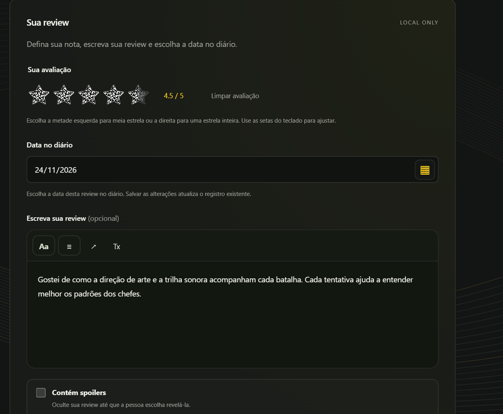

03 / SUA OPINIÃO
Cada jogo merece
uma review sua.
Notas em meias estrelas, texto, data no diário e aviso de spoiler para quem ainda vai jogar.
EDITOR / REVIEW E AVALIAÇÃO

De 0,5 a 5 estrelas Spoilers protegidos
Tela do projeto. A review exibida é um exemplo de uso.